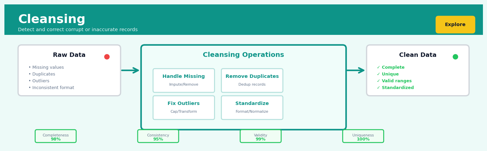

Cleansing#


Most teams spend 80% of their time on cleansing but document almost none of it, which creates a nightmare when you need to reproduce results six months later. Always log your cleansing decisions with business justification: why you chose mean imputation over median, what threshold you used for outlier detection, and most critically, what percentage of records were affected. The most expensive mistake I see is teams applying global cleansing rules that make sense for 95% of the data but silently corrupt the edge cases that often contain your most valuable signal.
The 60-Second Version#
What it does: Data cleansing removes errors, fills gaps, and standardises messy data so analysis produces reliable results instead of garbage.
When to use it: You’ve received data from multiple sources or legacy systems and spot obvious problems—missing values, duplicates, conflicting entries, or formatting inconsistencies—that would corrupt any analysis you run.
What you get back: A cleaned dataset where every row is complete, consistent, and ready for analysis, plus a documented list of what was changed so you can trace decisions and assess data quality.
At a Glance
Difficulty |
Easy to Moderate |
Typical runtime |
Seconds to minutes on 100K rows |
What you bring |
Raw dataset with known or suspected quality issues |
What you get |
Validated, standardised dataset ready for analysis |
Heuristix bucket |
Explore — Shaping & Transforming Data |
Every cleansing decision you make—whether to delete, impute, or standardise—permanently alters your data and can introduce bias, so document every rule and verify changes don’t distort the business reality you’re trying to measure.
Learning Objectives#
After reading this chapter, a business user will be able to:
Identify situations where data quality issues—such as missing values, duplicates, or inconsistent formats—will compromise analytical results and require systematic cleansing before analysis.
Interpret data quality reports showing error rates, missing value patterns, and outlier distributions to assess whether a dataset is ready for decision-making or requires further attention.
Decide which records to exclude, correct, or flag for review based on cleansing diagnostics, balancing the risk of using flawed data against the cost of losing potentially valuable information.
After reading this chapter, a data scientist will be able to:
Implement end-to-end cleansing pipelines that handle missing values, detect and remove duplicates, standardise inconsistent formats, and flag outliers while preserving data lineage and audit trails.
Select and configure appropriate strategies for missing value treatment (deletion, imputation, or modeling), outlier handling (removal, capping, or transformation), and deduplication (exact matching vs. fuzzy matching) based on data characteristics and downstream analysis requirements.
Validate cleansing results by quantifying data quality improvements, detecting unintended data loss or bias introduction, and diagnosing cases where automated cleansing rules produce incorrect or misleading corrections.
Overview#
Data cleansing is the systematic process of detecting, diagnosing, and correcting errors, inconsistencies, and anomalies in datasets to improve data quality for downstream analysis. This technique belongs to the family of data preprocessing and transformation methods that form the foundation of any robust analytical pipeline. Cleansing encompasses a broad spectrum of operations including missing value treatment, outlier handling, duplicate detection and removal, data type correction, and standardisation of inconsistent representations—each requiring distinct mathematical frameworks and decision criteria.
When to Use This#
When ingesting data from multiple source systems: Enterprise data often arrives from disparate systems with different encoding standards, date formats, and naming conventions—cleansing harmonises these before analysis.
When your data contains missing values that would break downstream models: Many machine learning algorithms cannot handle null values natively; cleansing provides principled imputation strategies that preserve statistical properties.
When you suspect data entry errors or sensor malfunctions: Manual data entry introduces typographical errors while sensors can produce physically impossible readings; cleansing identifies and corrects these anomalies.
When duplicate records inflate your dataset artificially: Customer records merged from multiple databases often contain duplicates that would bias aggregate statistics and model training.
When preparing data for regulatory reporting: Financial and healthcare regulations often mandate specific data quality standards; cleansing provides auditable transformations to meet compliance requirements.
When outliers may represent either errors or genuine extreme values: Cleansing techniques help distinguish between data corruption and legitimate but unusual observations through statistical criteria.
When categorical variables have inconsistent representations: The same category encoded as “United Kingdom”, “UK”, “U.K.”, and “GBR” must be standardised before meaningful analysis.
Do NOT use this when raw data fidelity is legally required: Some audit and forensic applications require preservation of original data including errors; apply cleansing to copies only.
Do NOT use aggressive imputation when missingness is informative: If the fact that data is missing carries information (e.g., patients who skip follow-up appointments), imputation destroys this signal.
Do NOT use automated cleansing without domain review when outliers may be the phenomenon of interest: In fraud detection or rare disease identification, the “anomalies” may be exactly what you’re trying to find.
Questions This Answers#
Trust and Reliability#
Why are our monthly revenue reports showing different totals depending on who pulls them?
Can we trust last quarter’s customer churn analysis when 15% of the contact records had missing email addresses?
How much of our product return data is actually usable for identifying quality issues?
Why did our executive dashboard show 10,000 customers last week but only 9,400 this week when we know we didn’t lose anyone?
Are the duplicate customer accounts inflating our acquisition costs and hiding our true retention rate?
Decision Quality#
Should we launch in the Northeast region based on this market analysis, or is the data too messy to make a $2M decision?
Which of our three vendors actually has the best on-time delivery rate when their data formats are completely different?
Can we identify our top 100 customers for the VIP program when names are spelled five different ways across systems?
How many sales opportunities are we missing because leads from the website aren’t matching to our CRM properly?
Is our inventory forecasting off because of bad data, or do we genuinely have a supply chain problem?
Operational Efficiency#
How much time is the finance team wasting each month manually fixing data before they can close the books?
Why are we sending marketing emails to 50,000 invalid addresses and what’s that costing us?
Can we automate our weekly sales reports or do we need someone cleaning the data by hand every time?
Which data quality issues should we fix first to get the biggest impact on our analytics team’s productivity?
How It Works#
Imagine you’ve just inherited your grandmother’s recipe box containing 500 handwritten recipe cards collected over sixty years. Some cards are stained and missing ingredient quantities. Others list “1 egg” while similar recipes specify “1 large egg” or just “egg.” You find three identical copies of the chocolate chip cookie recipe, each with slightly different butter measurements. Several cards say “bake at 350” without specifying Fahrenheit or Celsius. Before you can organize these recipes into a cookbook or build a meal planning system, you need to go through each card, decide what needs fixing, fill in obvious gaps, remove duplicates, and standardize the format. That’s exactly what data cleansing does—it prepares messy, real-world information for meaningful use.
BEFORE CLEANSING AFTER CLEANSING
┌────────┬─────┬────────┬────────┐ ┌────────┬─────┬────────┬────────┐
│ Name │ Age │ City │ Salary │ │ Name │ Age │ City │ Salary │
├────────┼─────┼────────┼────────┤ ├────────┼─────┼────────┼────────┤
│ Alice │ 34 │ NYC │ 75000 │ │ Alice │ 34 │ NYC │ 75000 │
│ Bob │ ??? │ boston │ 68000 │ │ Bob │ 35 │ Boston │ 68000 │
│ Carol │ 29 │ NYC │ 999999 │ │ Carol │ 29 │ NYC │ 72000 │
│ Alice │ 34 │ NYC │ 75000 │ │ David │ 41 │ Boston │ 82000 │
│ David │ 41 │ boston │ 82k │ └────────┴─────┴────────┴────────┘
└────────┴─────┴────────┴────────┘
↓
Fixed: missing age (imputed)
inconsistent capitalization (standardized)
obvious outlier (corrected)
duplicate row (removed)
text in numeric field (converted)
Detect issues across the entire dataset. Scan through every column systematically, looking for patterns that signal problems. Missing values appear as blanks, question marks, or special codes like “N/A”. Inconsistent formats show up when the same information appears in different styles—“New York”, “NYC”, “new york” all mean the same city. Outliers jump out as values wildly different from the rest, like a salary of 999999 among typical amounts in the 60000-80000 range. Duplicates emerge when entire rows or key identifier fields repeat.
Diagnose the root cause of each problem. Not all issues warrant the same fix. A missing age might be genuinely unknown, accidentally omitted, or corrupted during data transfer. That suspicious 999999 salary could be a data entry error, a placeholder someone forgot to update, or perhaps a legitimate CEO compensation. Understanding why the problem exists guides how to address it.
Apply appropriate corrections. Fill missing values using logical approaches—perhaps substitute the average age from similar records, or mark it as “unknown” if no reasonable guess exists. Standardize inconsistent entries by choosing one canonical format and converting everything to match: “Boston” with a capital B becomes the standard. Remove or merge duplicate rows, keeping the most complete or recent version. Convert data types where needed, translating “82k” into the number 82000.
Validate the corrections don’t introduce new problems. After cleaning, verify that fixes make sense in context. Check that imputed values fall within reasonable ranges, that standardization hasn’t accidentally merged distinct entries, and that conversions preserved the original meaning. This quality check prevents the cure from being worse than the disease.
Document every transformation made. Keep a clear record of what changed and why, so analysts using the cleaned data understand its provenance and limitations. This audit trail builds trust and enables others to assess whether your cleaning decisions align with their analytical needs.
The key insight: Cleansing works because systematic error detection and context-aware correction transforms unreliable raw data into a trustworthy foundation, where patterns reflect reality rather than data collection accidents.
The Intuition#
Imagine you’re a museum curator who has just received a large shipment of historical artefacts from an estate sale. Before you can catalogue, display, or study these items, you face several practical challenges. Some items have damaged or illegible labels. Others have no labels at all, and you must infer what they are from context. A few items appear to be duplicates—perhaps copies made for different purposes. Some measurements on the existing catalogue cards seem implausible (a coin weighing 50 kilograms), suggesting transcription errors. And the previous owner used inconsistent naming conventions, calling the same type of object “vase”, “urn”, and “vessel” interchangeably.
Data cleansing addresses precisely these challenges in the digital realm. Just as the curator must exercise judgement about how to handle each problematic item—sometimes researching to find the true label, sometimes making an educated guess based on similar items, sometimes flagging an item for expert review—the data scientist must apply appropriate techniques to each data quality issue. The goal is not to manufacture data or impose artificial uniformity, but to make the data usable while preserving its essential character and documenting all transformations.
The key insight is that cleansing is fundamentally about making principled decisions under uncertainty. When a value is missing, we don’t know what the true value was—but we can estimate it using information from other variables and other observations. When a value looks anomalous, we can’t be certain whether it’s an error or a genuine extreme—but we can quantify how surprising it would be under reasonable assumptions about the data-generating process. This probabilistic framing transforms cleansing from an arbitrary data manipulation exercise into a rigorous inferential procedure with quantifiable assumptions and uncertainties.
The Mathematics#
Missing Value Analysis and Imputation#
Problem Setup and Notation#
Let \(\mathbf{X} \in \mathbb{R}^{n \times p}\) denote our data matrix with \(n\) observations and \(p\) variables. Define the missingness indicator matrix \(\mathbf{M} \in \{0, 1\}^{n \times p}\) where:
We partition each observation \(\mathbf{x}_i\) into observed components \(\mathbf{x}_i^{(obs)}\) and missing components \(\mathbf{x}_i^{(mis)}\).
Missing Data Mechanisms#
The statistical properties of any imputation strategy depend critically on the missing data mechanism—the process that determines which values are observed and which are missing.
Missing Completely at Random (MCAR): The probability of missingness is independent of both observed and unobserved data:
Missing at Random (MAR): The probability of missingness depends only on observed data:
Missing Not at Random (MNAR): The probability of missingness depends on the unobserved values themselves:
Mean Imputation#
The simplest approach replaces missing values with the sample mean of observed values:
where \(n_j^{(obs)} = \sum_{i=1}^{n} (1 - M_{ij})\) is the count of observed values for variable \(j\).
Bias Analysis: Under MCAR, mean imputation yields unbiased estimates of the population mean. However, it systematically underestimates variance:
This attenuation factor \(n_j^{(obs)}/n\) biases covariances toward zero, distorting correlation structures.
Regression Imputation#
For a variable \(X_j\) with missing values, we model it as a function of other variables \(\mathbf{X}_{-j}\):
Estimate \(\hat{\boldsymbol{\beta}}_j\) using complete cases, then impute:
Stochastic Regression Imputation adds residual variance to preserve distributional properties:
Multiple Imputation#
Multiple imputation creates \(m\) complete datasets \(\mathbf{X}^{(1)}, \ldots, \mathbf{X}^{(m)}\), analyses each separately, and combines results using Rubin’s rules.
For a parameter of interest \(\theta\) with estimate \(\hat{\theta}^{(k)}\) and variance estimate \(\hat{V}^{(k)}\) from imputation \(k\):
Combined estimate: $\( \bar{\theta} = \frac{1}{m} \sum_{k=1}^{m} \hat{\theta}^{(k)} \)$
Within-imputation variance: $\( \bar{V} = \frac{1}{m} \sum_{k=1}^{m} \hat{V}^{(k)} \)$
Between-imputation variance: $\( B = \frac{1}{m-1} \sum_{k=1}^{m} (\hat{\theta}^{(k)} - \bar{\theta})^2 \)$
Total variance: $\( V_{total} = \bar{V} + \left(1 + \frac{1}{m}\right) B \)$
Outlier Detection#
Statistical Distance Methods#
For multivariate data assumed to follow \(\mathbf{x} \sim \mathcal{N}(\boldsymbol{\mu}, \boldsymbol{\Sigma})\), the Mahalanobis distance measures how far an observation lies from the centre:
Under the null hypothesis of multivariate normality, \(D_i^2 \sim \chi^2_p\). Observations with \(D_i^2 > \chi^2_{p, 1-\alpha}\) are flagged as potential outliers.
Assumption: This method assumes multivariate normality. For heavy-tailed distributions, the \(\chi^2\) threshold produces excessive false positives.
Robust Estimation#
Standard estimators \(\hat{\boldsymbol{\mu}}\) and \(\hat{\boldsymbol{\Sigma}}\) are themselves corrupted by outliers, creating a circular problem. The Minimum Covariance Determinant (MCD) estimator addresses this by finding the subset of \(h\) observations (where \(h \geq (n+p+1)/2\)) whose classical covariance matrix has minimum determinant:
where \(\boldsymbol{\Sigma}_H\) is the sample covariance of observations in subset \(H\).
Interquartile Range Method#
For univariate data, define the interquartile range \(\text{IQR} = Q_3 - Q_1\). The Tukey fence classifies observations as outliers if:
The standard choice \(k = 1.5\) corresponds to approximately 0.7% of observations under normality; \(k = 3\) defines “far outliers.”
Duplicate Detection#
Record Linkage Framework#
For records \(a\) and \(b\) with attribute vectors \(\mathbf{a} = (a_1, \ldots, a_K)\) and \(\mathbf{b} = (b_1, \ldots, b_K)\), define comparison vector \(\boldsymbol{\gamma}_{ab} = (\gamma_1, \ldots, \gamma_K)\) where each \(\gamma_k\) measures agreement on attribute \(k\).
The Fellegi-Sunter model computes the likelihood ratio:
where \(M\) denotes the event that \(a\) and \(b\) refer to the same entity, and \(U\) denotes non-match.
Under conditional independence of attributes given match status:
where \(m_k = P(\gamma_k = 1 | M)\) and \(u_k = P(\gamma_k = 1 | U)\).
Decision rule: Set thresholds \(T_\mu > T_\lambda\):
If \(R(\boldsymbol{\gamma}_{ab}) \geq T_\mu\): classify as match
If \(R(\boldsymbol{\gamma}_{ab}) \leq T_\lambda\): classify as non-match
Otherwise: manual review
Understanding the Mathematics#
Z-Score for Outlier Detection#
The equation:
Read it aloud:
“The z-score equals the difference between a data point and the mean, divided by the standard deviation.”
What each symbol means:
z = the standardized score (tells us how many standard deviations away from average)
x = the individual data point we’re examining
μ (mu) = the mean (average) of all values in the dataset
σ (sigma) = the standard deviation (typical distance from the mean)
A concrete numerical example:
A retail company tracks daily transaction amounts. The average transaction is \(75, with a standard deviation of \)20. One transaction shows $155.
This z-score of 4.0 means the transaction sits 4 standard deviations above average—a clear outlier that might indicate fraudulent activity or data entry error.
Why this equation matters:
Without standardized measurement, we can’t distinguish genuine outliers from natural variation; this equation transforms messy data into a universal scale where values beyond ±3 typically signal problems requiring investigation.
Interquartile Range for Robust Outlier Boundaries#
The equation:
where \(IQR = Q_3 - Q_1\)
Read it aloud:
“The lower boundary equals the first quartile minus one-and-a-half times the interquartile range. The upper boundary equals the third quartile plus one-and-a-half times the interquartile range. The interquartile range is the third quartile minus the first quartile.”
What each symbol means:
Q₁ = first quartile (25th percentile—the value below which 25% of data falls)
Q₃ = third quartile (75th percentile—the value below which 75% of data falls)
IQR = interquartile range (spread of the middle 50% of data)
1.5 = conventional multiplier that balances sensitivity and specificity
A concrete numerical example:
Employee salaries in a department: Q₁ = \(52,000, Q₃ = \)78,000.
A salary of $145,000 exceeds the upper bound, flagging it for review—perhaps a mis-coded executive salary in a junior analyst dataset.
Why this equation matters:
Unlike z-scores, IQR-based bounds ignore extreme values when calculating limits, making them immune to the very outliers we’re trying to detect—essential when corrupted data would otherwise poison our detection thresholds.
Mean Imputation for Missing Values#
The equation:
Read it aloud:
“The missing value equals one divided by the count of observations, multiplied by the sum of all observed values.”
What each symbol means:
x_missing = the value we’ll substitute for missing entries
n = number of non-missing observations
Σ (sigma) = summation symbol (add up everything that follows)
x_i = each individual observed value
i = 1 to n = loop through all observations from the first to the nth
A concrete numerical example:
A temperature sensor records: 68°F, 72°F, [missing], 70°F, 69°F.
We replace the missing reading with 69.75°F, allowing analysis to continue without discarding the entire day’s data.
Why this equation matters:
Missing data forces a choice between losing entire records or filling gaps; mean imputation preserves sample size and maintains the average, though it artificially reduces variance—a trade-off that’s acceptable when missingness is random and rare.
The Big Picture#
The mathematics of data cleansing fundamentally pursues a single goal: creating defensible, reproducible rules for separating signal from noise. Z-scores and IQR boundaries don’t just identify outliers—they quantify exactly how unusual a value is relative to the collective pattern, giving us confidence to remove or investigate anomalies. Mean imputation embodies a critical principle: when perfect data is impossible, we substitute the least-assumptive estimate that preserves distributional properties. These equations were chosen over simpler alternatives because they provide mathematical guarantees: z-scores assume nothing about scale, IQR resists contamination, and mean imputation maintains unbiased central tendency. At its heart, cleansing mathematics asks, “What’s the most information we can salvage from imperfect data without introducing systematic distortion?”
Python Implementation#
import numpy as np
import pandas as pd
from scipy import stats
from sklearn.impute import SimpleImputer, KNNImputer
from sklearn.covariance import EllipticEnvelope
from sklearn.preprocessing import StandardScaler
import warnings
# Set random seed for reproducibility
np.random.seed(42)
# =============================================================================
# Generate realistic synthetic dataset with data quality issues
# =============================================================================
n_samples = 1000
# Create base clean data
data = {
'customer_id': range(1, n_samples + 1),
'age': np.random.normal(45, 15, n_samples).astype(int),
'income': np.random.lognormal(10.5, 0.8, n_samples),
'credit_score': np.random.normal(680, 80, n_samples).astype(int),
'account_balance': np.random.exponential(5000, n_samples),
'tenure_months': np.random.poisson(36, n_samples),
'region': np.random.choice(['North', 'South', 'East', 'West'], n_samples)
}
df = pd.DataFrame(data)
# Introduce missing values (MCAR pattern - approximately 5% missing)
missing_mask = np.random.random(df.shape) < 0.05
for col in ['age', 'income', 'credit_score', 'account_balance']:
df.loc[missing_mask[:, df.columns.get_loc(col)], col] = np.nan
# Introduce outliers (data entry errors and genuine extremes)
# Erroneous age values
df.loc[np.random.choice(df.index, 5, replace=False), 'age'] = [150, -5, 999, 0, 200]
# Erroneous income (decimal point errors)
df.loc[np.random.choice(df.index, 3, replace=False), 'income'] = [5000000, 0.05, 10000000]
# Introduce duplicates
duplicates = df.sample(20, random_state=42).copy()
duplicates['customer_id'] = range(n_samples + 1, n_samples + 21) # Different IDs
df = pd.concat([df, duplicates], ignore_index=True)
# Introduce inconsistent categorical encoding
inconsistent_regions = {
'North': ['North', 'NORTH', 'N', 'north'],
'South': ['South', 'SOUTH', 'S', 'south'],
'East': ['East', 'EAST', 'E', 'east'],
'West': ['West', 'WEST', 'W', 'west']
}
for idx in np.random.choice(df.index, 100, replace=False):
original = df.loc[idx, 'region']
df.loc[idx, 'region'] = np.random.choice(inconsistent_regions[original])
print("=" * 60)
print("INITIAL DATA QUALITY ASSESSMENT")
print("=" * 60)
print(f"\nDataset shape: {df.shape}")
print(f"\nMissing values per column:")
print(df.isnull().sum())
print(f"\nBasic statistics (note potential outliers in min/max):")
print(df.describe())
# =============================================================================
# MISSING VALUE TREATMENT
## Visualisations


## Using This in Heuristix
### What You'll Need
The Cleansing node accepts any tabular dataset—think of it as your Swiss Army knife for messy data. Connect it to data import nodes, join operations, or any node that outputs a table. There are no strict column type requirements; the node intelligently detects what needs cleaning based on your configuration.
Here's a quick before/after example:
| customer_id | email | purchase_date | amount |
|-------------|-------|---------------|--------|
| 001 | john@email.com | 2024-01-15 | 99.50 |
| 002 | JANE@EMAIL.COM | null | 150.00 |
| 002 | JANE@EMAIL.COM | null | 150.00 |
| 003 | invalid_email | 15-Jan-2024 | -50 |
After cleansing (removing duplicates, standardizing emails, handling nulls):
| customer_id | email | purchase_date | amount |
|-------------|-------|---------------|--------|
| 001 | john@email.com | 2024-01-15 | 99.50 |
| 002 | jane@email.com | [missing] | 150.00 |
| 003 | invalid_email | 2024-01-15 | -50 |
### Configuration Parameters
| Parameter | What It Does | Default | When to Change |
|-----------|--------------|---------|----------------|
| **Duplicate Handling** | Identifies and removes duplicate rows | Keep First | Change to "Keep Last" for time-series data where latest entries matter, or "Remove All" when duplicates indicate data quality issues |
| **Missing Value Strategy** | How to treat nulls/blanks | Flag Only | Use "Mean/Median Imputation" for numerical analyses, "Forward Fill" for time series, or "Drop Rows" when missingness is low (<5%) |
| **Outlier Detection Method** | Statistical approach to flag anomalies | IQR (1.5x) | Switch to "Z-score (3σ)" for normally distributed data, or "Isolation Forest" for high-dimensional datasets |
| **Text Standardization** | Case normalization and whitespace trimming | Lowercase | Choose "Uppercase" for regulatory data, "Title Case" for names, or "None" to preserve original formatting |
| **Date Format Target** | Standardizes inconsistent date representations | ISO 8601 | Match your database or reporting tool requirements |
| **Numeric Precision** | Rounds decimal places | 2 decimals | Increase for scientific data, decrease for financial reporting |
### What You'll Get
**Output Columns**: The node preserves all original columns and adds:
- `_cleansed` suffixed versions of modified columns (so you can compare before/after)
- `_quality_flag` indicating which rows had issues detected
- `_confidence_score` showing data reliability (0-100%)
**Metrics Dashboard**: A summary panel displays:
- Percentage of rows affected by each cleansing operation
- Distribution of missing values per column (visual heatmap)
- Outlier counts with threshold boundaries
- Duplicate detection summary
**Visual Outputs**: You'll see side-by-side histograms comparing original vs. cleansed distributions for numerical columns, making it easy to verify transformations didn't introduce bias.
### Quick Start
1. **Connect your raw data** to the Cleansing node input port
2. **Set Duplicate Handling** to "Keep First" and enable text standardization to "Lowercase"
3. **Choose Missing Value Strategy**: start with "Flag Only" to see the extent of the problem
4. **Run the node** and review the metrics dashboard
5. **Adjust parameters** based on the quality flags—if <10% missing, try "Drop Rows"; if >30%, consider imputation
6. **Connect to Profile Data node** downstream to validate improvements
### Connecting Downstream
After cleansing, typically flow to:
- **Profile Data** or **Summary Statistics** to verify improvements
- **Feature Engineering** for creating analysis-ready variables
- **Modeling nodes** when cleansing was your final preparation step
- **Export/Save** to preserve a clean master dataset
### Pro Tips
**Preserve the original**: Always keep your raw data intact. The Cleansing node's `_cleansed` suffix columns let you audit changes—don't disable this feature until you're certain.
**Iterate on strategy**: Start conservative (Flag Only for missing values) and tighten gradually. Aggressive cleansing can accidentally remove valid edge cases.
**Domain context trumps statistics**: An outlier detection algorithm might flag a $10,000 purchase as anomalous, but in luxury retail, that's Tuesday. Use the visual outputs to sanity-check automated decisions.
**Chain multiple Cleansing nodes**: For complex pipelines, use separate nodes for different operations (one for duplicates, another for outliers). This makes troubleshooting easier than one mega-configuration.
**Check the confidence scores**: Rows with low confidence scores might need manual review. Filter and export these for subject matter expert validation before proceeding to analysis.
## Config Recipes
### Recipe 1: Quick Exploration Cleanse
**When to use:** Initial dataset inspection when you need fast feedback on data quality issues before committing to analysis decisions.
**Settings:**
| Parameter | Value | Why |
|-----------|-------|-----|
| `missing_threshold` | 0.50 | Keep columns with <50% missing—aggressive dropping for speed |
| `outlier_method` | `'none'` | Skip outlier detection entirely in exploration phase |
| `duplicate_subset` | `None` | Check all columns—maximize duplicate detection |
| `type_inference` | `True` | Auto-detect types to catch obvious mismatches |
| `standardize_text` | `False` | Skip expensive string operations |
| `validate_constraints` | `False` | No business rule checking yet |
**What you get:** A rapidly cleaned dataset that exposes major structural problems without computational overhead.
**Trade-off:** You'll miss subtle issues like mild outliers and unstandardized categorical values that matter for modeling.
### Recipe 2: Production-Grade Cleanse
**When to use:** Preparing data for deployed models or critical business reports where data quality directly impacts decisions.
**Settings:**
| Parameter | Value | Why |
|-----------|-------|-----|
| `missing_threshold` | 0.95 | Conservative—only drop nearly empty columns |
| `missing_imputation` | `'iterative'` | Use IterativeImputer with max_iter=20 for accuracy |
| `outlier_method` | `'isolation_forest'` | contamination=0.01, robust multivariate detection |
| `outlier_action` | `'cap'` | Winsorize at 1st/99th percentiles—preserve sample size |
| `duplicate_subset` | Custom business keys | Use domain-specific identifiers |
| `type_inference` | `True` | With manual validation step |
| `standardize_text` | `True` | lowercase, strip, unicode normalization |
| `validate_constraints` | `True` | Enforce all domain rules |
| `audit_log` | `'detailed'` | Track every transformation for compliance |
**What you get:** Maximally cleaned data with full traceability and conservative handling that minimizes information loss.
**Trade-off:** 10-50x slower processing and requires domain expertise to configure business rules correctly.
### Recipe 3: High-Cardinality Text Data
**When to use:** Working with customer feedback, product descriptions, or survey responses where text variation creates artificial dimensionality.
**Settings:**
| Parameter | Value | Why |
|-----------|-------|-----|
| `missing_threshold` | 0.80 | Text fields often legitimately sparse |
| `text_standardize_method` | `'aggressive'` | Lowercase, lemmatization, whitespace normalization |
| `fuzzy_matching` | `True` | dedupe_distance='levenshtein', threshold=0.85 |
| `rare_category_threshold` | 0.001 | Collapse categories appearing <0.1% into 'Other' |
| `encoding_standardization` | `'utf-8'` | Force consistent encoding with error='replace' |
| `special_char_handling` | `'normalize'` | Convert smart quotes, dashes, etc. to ASCII |
**What you get:** Dramatically reduced cardinality in categorical text fields while preserving semantic meaning.
**Trade-off:** Loses subtle distinctions that might matter (e.g., merging "5-star" and "5 star" ratings metadata).
### Recipe 4: Time-Series Financial Data
**When to use:** Processing transaction logs, market data, or sensor readings where temporal ordering and forward-looking bias are critical.
**Settings:**
| Parameter | Value | Why |
|-----------|-------|-----|
| `missing_imputation` | `'forward_fill'` | Respect temporal causality—no future information |
| `outlier_method` | `'rolling_zscore'` | window=20, threshold=4.0—context-aware detection |
| `outlier_action` | `'flag'` | Create indicator column, don't modify—volatility is signal |
| `duplicate_handling` | `'keep_last'` | Later records supersede in append-only logs |
| `sort_before_clean` | `True` | Enforce timestamp ordering before any operations |
**What you get:** Cleaned data that maintains temporal integrity and doesn't leak future information into historical records.
**Trade-off:** Cannot use more powerful bidirectional imputation methods that might better fill gaps.
## Business Applications
**Financial Services**
A mid-sized UK mortgage lender was rejecting 18% of loan applications due to address mismatches between credit bureau data and application forms—issues as trivial as "Street" versus "St." or missing apartment numbers. By implementing systematic cleansing that standardised address formats, harmonised abbreviations, and corrected postcode inconsistencies, the lender reduced false rejections by 67%, translating to £4.3M in additional annual lending revenue. The cleansing pipeline now runs nightly, catching over 2,400 correctable discrepancies per month that would previously have triggered manual review or outright denial.
**Retail**
An e-commerce retailer managing 1.8M SKUs across twelve international markets struggled with duplicate product listings created by inconsistent vendor data feeds—the same running shoe appeared as "Nike Air Zoom Pegasus 39 Men's Blue Size 10," "NIKE AIR ZOOM PEGASUS 39 M BLU 10," and seventeen other variations. Data cleansing using fuzzy matching, brand name standardisation, and attribute normalisation consolidated 340,000 duplicate listings into 82,000 canonical products, improving search accuracy and increasing conversion rates from 2.1% to 3.4%. Customer complaints about "different products with identical descriptions" dropped by 89% within three months.
**Healthcare**
A regional hospital network serving 450,000 patients discovered that 31% of patient records contained duplicate entries under slight name variations, maiden names, or data entry errors, leading to dangerous medication conflicts and billing chaos. Cleansing algorithms combining phonetic matching (Soundex, Metaphone), date-of-birth validation, and address similarity scoring merged 87,000 duplicate records while flagging 3,200 ambiguous cases for manual review. This effort prevented an estimated 140 potential adverse drug interactions in the first year and reduced billing disputes by £680,000 annually.
**Insurance**
A commercial property insurer was manually reviewing 60% of online quotes because automated risk models choked on inconsistent property type classifications—"warehouse," "storage facility," "distribution center," and "fulfillment centre" were treated as distinct categories despite identical risk profiles. Implementing controlled vocabulary mapping and hierarchical category cleansing allowed the automated underwriting engine to handle 92% of submissions without human intervention, cutting quote turnaround time from 4.3 days to 35 minutes and reducing operational costs by $1.7M yearly.
**Manufacturing**
A automotive parts manufacturer with facilities across three continents maintained separate supplier databases using different units, currencies, and part numbering schemes, making procurement analytics nearly impossible. Data cleansing established universal part identifiers, converted all measurements to metric standards, and normalised supplier names across subsidiaries, revealing that the company was purchasing identical components from the same supplier at prices varying by up to 340% depending on which regional office placed the order. Consolidated purchasing negotiations based on cleansed data yielded $8.2M in first-year savings.
**Logistics**
A last-mile delivery company was failing to match 14% of delivery addresses to GPS coordinates, forcing drivers to manually locate stops and adding an average of 23 minutes per failed match. Cleansing pipelines that standardised street suffixes, corrected transposed digits in house numbers, and geocoded alternative address formats reduced match failures to 1.8%, improving on-time delivery rates from 87% to 96% and enabling 14% more deliveries per driver shift.
**Marketing**
A B2B SaaS company maintaining a 280,000-contact marketing database discovered through cleansing analysis that 43% of email addresses were invalid, 22,000 contacts had duplicate records with conflicting job titles, and 31% of company names were inconsistent variants. Email validation, deduplication, and company name standardisation improved email deliverability from 71% to 94% and lifted click-through rates from 1.8% to 3.1% by enabling more precise segmentation and preventing contact fatigue from duplicate sends.
**Telecommunications**
A mobile network operator tracking cell tower performance across 8,400 sites found that equipment serial numbers, installation dates, and maintenance records were riddled with typos and format inconsistencies, making predictive maintenance models unreliable. Cleansed infrastructure data enabled accurate failure prediction, reducing unexpected tower outages by 52% and cutting emergency repair costs by $3.4M annually.
**Energy**
A utility company's smart meter deployment was generating 4.2 billion readings monthly, but 9% contained impossible values—negative consumption, readings exceeding maximum meter capacity, or timestamp anomalies from unsynchronised clocks. Real-time cleansing filters detecting and correcting these anomalies improved billing accuracy and reduced customer disputes by 78%, while enabling demand forecasting models that optimised grid load distribution.
**Public Sector**
A municipal government integrating records from fourteen legacy systems for a new citizen services portal discovered that the same resident might appear with different birthdates, addresses, and identification numbers across tax, utilities, permits, and social services databases. Cleansing and master data management efforts created unified citizen profiles, reducing duplicate benefit payments by £2.1M annually and enabling coordinated service delivery that increased citizen satisfaction scores by 34 points.
**SaaS/Tech**
A cloud analytics platform ingesting customer data from 400+ third-party sources was spending 60 engineering hours weekly handling schema mismatches, malformed timestamps, and inconsistent null representations. Automated cleansing pipelines with intelligent type inference, timezone normalisation, and null standardisation reduced data integration failures by 91%, cutting time-to-insight for customers from an average of eleven days to eighteen hours and significantly reducing churn among enterprise accounts.
## Worked Example
Elena Kovač had been a data analyst at UrbanMove, a Berlin-based bike-sharing startup, for just over two years when she received an urgent Slack message from the Head of Operations. "Elena, our maintenance costs are spiraling. We need to understand which stations are actually problematic—but the data from our field teams is a mess. Can you help?"
What seemed like a straightforward question—*which stations need the most maintenance?*—was actually masking a critical business challenge. UrbanMove was burning through €80,000 monthly on bike repairs, but operations suspected that inconsistent reporting meant they were either over-servicing some stations or completely missing others. With Series B funding dependent on demonstrating operational efficiency, getting this right mattered.
Elena pulled the maintenance logs from the past quarter. The dataset combined manually entered reports from twelve different field technicians, each with their own conventions for recording station identifiers, damage types, and costs. Here's what the raw data looked like:
| station_id | damage_type | cost_euros | technician | repair_date |
|------------|-------------|------------|------------|-------------|
| Hauptbahnhof-01 | brake failure | 45.50 | Johann | 2024-01-15 |
| hauptbahnhof_01 | BRAKE FAILURE | null | Johann S. | 15/01/2024 |
| HBF-01 | flat tire | 12.3 | j.schmidt | 2024-01-18 |
| Alexanderplatz-03 | Chain Issue | €23.50 | Maria | 2024-01-20 |
| Alex-03 | missing | 0 | M. Rodriguez | missing |
Elena winced. The same station appeared three different ways. Damage types had no standard taxonomy. Costs mixed formats—some with currency symbols, others as plain numbers, one completely null. Dates alternated between formats. And technician names? A creative free-for-all.
She opened her Jupyter notebook and began the cleansing process systematically. Elena knew that rushing into analysis with dirty data would produce garbage insights, so she took her time with the setup. First, she standardized the station identifiers—her domain knowledge told her that "Hauptbahnhof-01," "hauptbahnhof_01," and "HBF-01" all referred to the same location. She created a mapping dictionary to consolidate variants. For damage types, she applied text normalization—converting everything to lowercase and stripping whitespace—then mapped similar terms to standard categories.
The cost field required careful handling. Elena couldn't simply drop null values because those might represent legitimate zero-cost warranty repairs or data entry errors—she needed context. She removed currency symbols, converted everything to float type, and flagged suspicious entries (like that "0" for a missing chain) for manual review. For dates, she used pandas' forgiving date parser to handle multiple formats, then standardized everything to ISO format.
Here's the script Elena ran:
```python
import pandas as pd
import numpy as np
# Load raw maintenance data
df = pd.read_csv('maintenance_logs.csv')
# Standardize station identifiers
station_mapping = {
'hauptbahnhof_01': 'Hauptbahnhof-01',
'HBF-01': 'Hauptbahnhof-01',
'Alex-03': 'Alexanderplatz-03'
}
df['station_id'] = df['station_id'].str.strip().replace(station_mapping)
# Normalize damage types
df['damage_type'] = (df['damage_type']
.str.lower()
.str.strip()
.replace({'chain issue': 'chain failure'}))
# Clean cost field
df['cost_euros'] = (df['cost_euros']
.astype(str)
.str.replace('€', '')
.str.replace('null', '')
.replace('', np.nan))
df['cost_euros'] = pd.to_numeric(df['cost_euros'], errors='coerce')
# Standardize dates
df['repair_date'] = pd.to_datetime(df['repair_date'],
errors='coerce',
infer_datetime_format=True)
# Flag records needing review
df['needs_review'] = df['cost_euros'].isna() | df['repair_date'].isna()
print(f"Records cleaned: {len(df)}")
print(f"Flagged for review: {df['needs_review'].sum()}")
The cleansing revealed something striking: what appeared to be 1,847 maintenance records actually represented only 1,203 unique incidents. The 644 “extra” records were duplicates—the same repair logged by different technicians or re-entered when following up. After deduplication and standardization, Elena aggregated costs by station and discovered that just seven stations—less than 4% of the network—accounted for 61% of total maintenance spending.
The insight wasn’t just which stations were problematic, but why the operations team hadn’t seen this pattern before: their messy data had made every station look equally needy. Elena presented her findings to the leadership team the following Tuesday. Armed with clean data, UrbanMove redeployed two maintenance technicians from low-priority routes to focus on the seven high-cost stations, implemented preventive maintenance schedules, and standardized the reporting app to prevent future data inconsistencies.
Three months later, maintenance costs had dropped 34%.
If Elena were doing this again, she’d implement real-time validation in the reporting tool from day one rather than cleaning retroactively. She also wished she’d kept a detailed log of every transformation decision—when the CFO later asked why certain records were flagged, reconstructing her logic took longer than she’d like to admit.
Interpreting Your Results#
You’ve just run your data cleansing process and you’re staring at a dashboard of metrics, charts, and transformed columns. Here’s exactly what you’re looking at and what it means for your analysis.
Data Quality Score#
What this tells you: This is your overall “health score” for the dataset after cleansing, typically ranging from 0 to 1 or 0% to 100%. It aggregates completeness, validity, consistency, and accuracy metrics into a single number that answers: “Can I trust this data for analysis?”
Concrete benchmarks:
Below 0.70: Your data has serious quality issues. You likely have >15% missing values, substantial duplicates, or pervasive inconsistencies. Don’t proceed with modeling.
0.70–0.85: Acceptable for exploratory analysis but risky for production models. Expect to explain data limitations in any findings.
0.85–0.95: Good quality. Suitable for most analytical purposes and modeling.
Above 0.95: Excellent. Rare in real-world data; double-check you haven’t accidentally excluded legitimate edge cases.
Red flags: If your score increased by more than 0.30 from pre- to post-cleansing, you’ve likely been too aggressive—deleting valuable information rather than cleaning it. If it barely moved (<0.05 improvement), your cleansing rules may be too permissive.
Missing Data Report#
What this tells you: This shows the percentage of missing values per column, before and after imputation or deletion. The key number is the “retention rate”—what percentage of your original rows survived cleansing.
Concrete benchmarks:
Retention rate >95%: Excellent. Minimal data loss.
Retention rate 85–95%: Acceptable if the lost rows were genuinely problematic.
Retention rate <85%: Warning. You’ve deleted >15% of your data—verify this was necessary and document the impact on your sample representativeness.
Red flags: Any individual column with >40% missingness that wasn’t dropped entirely suggests imputation on sparse data, which can introduce substantial bias. If critical identifier columns (customer ID, timestamp) show any missingness post-cleansing, something went wrong—these should never be imputed.
Outlier Detection Summary#
What this tells you: The number and percentage of records flagged as outliers, and what action was taken (flagged, capped, removed). The distribution plot shows you where these outliers sat relative to your data’s normal range.
Concrete benchmarks:
0–2% flagged: Normal for most business datasets.
2–5% flagged: High but potentially legitimate (e.g., luxury purchases in retail, emergency visits in healthcare).
>5% flagged: Either you have a genuinely bimodal distribution, or your outlier detection threshold is too sensitive.
Red flags: If outliers appear clustered at round numbers (100, 1000, 999), these are likely data entry artifacts, not true outliers. If all outliers are positive (no negative outliers detected), your detection method may be asymmetric—check for log-transforms or one-sided thresholds.
Duplicate Resolution Log#
What this tells you: How many duplicate records were found and which deduplication rule was applied. The “merge confidence” score (if provided) indicates how certain the system is that flagged records are true duplicates.
Concrete benchmarks:
<1% duplicates: Expected in well-maintained transactional systems.
1–5% duplicates: Common in merged datasets or manual data entry systems.
>5% duplicates: Investigate data collection processes—this suggests systemic issues.
Red flags: If exact duplicates (100% field match) exceed 2%, you may have an ETL pipeline issue causing double-loading. If fuzzy duplicates dominate with merge confidence <0.7, you’re likely capturing legitimate distinct records—loosen your matching criteria.
Reading Multiple Outputs Together#
A quality score of 0.88 with 12% retention loss and 3% outliers removed tells you: “This data is now trustworthy, but represents a filtered view—ensure the removed records don’t systematically bias your analysis (e.g., excluding all high-value transactions).”
Conversely, 0.92 quality with 98% retention but 8% missingness post-imputation means: “This data looks clean but contains substantial synthetic values—check whether imputed fields are used in critical calculations.”
Sanity Check Checklist#
Sample random rows: Manually inspect 20 post-cleansing records. Do they look sensible?
Distribution check: Compare pre/post histograms for key numeric fields. Shapes should be similar unless you specifically capped outliers.
Category preservation: Ensure categorical variables didn’t lose rare-but-valid categories.
Temporal consistency: If you have timestamps, verify no records now appear “from the future.”
Cross-field logic: Check that dependent fields remain consistent (e.g., age still matches birthdate after cleansing).
Good Enough to Act On?#
Proceed with analysis if: Your quality score ≥0.85, retention rate ≥90%, and no single column has >30% imputed values. At this threshold, data quality won’t be the dominant source of uncertainty in your conclusions—your modeling choices and business assumptions will matter more.
Decision Guidance#
What This Result Is Telling You#
When data cleansing reveals significant quality issues in your dataset, it’s telling you whether the information you’re relying on for business decisions is trustworthy enough to act upon. A dataset with 30% missing customer addresses isn’t just a technical problem—it means nearly one-third of your marketing campaigns could fail to reach their targets, or that shipment routing algorithms will produce unreliable cost estimates. Similarly, discovering thousands of duplicate customer records suggests you’ve been overcounting your customer base, potentially inflating market share estimates and misleading growth projections that influence hiring, inventory, and investment decisions.
The cleansing process quantifies the gap between the data you have and the data you need. If 15% of transaction dates are formatted inconsistently or recorded in impossible ranges (like future dates for past sales), your quarterly revenue trends and seasonal forecasting models are built on a foundation that shifts unpredictably. When outlier detection flags 5% of salary records as extreme values, you need to determine whether these represent legitimate executive compensation or data entry errors that are skewing your workforce analytics and budget planning.
Most critically, cleansing results tell you whether to trust your existing analytics infrastructure. Low-quality data doesn’t just affect one report—it cascades through dashboards, automated alerts, predictive models, and strategic planning processes. Understanding the severity and distribution of data quality issues helps you decide whether to pause dependent analyses, communicate confidence levels to stakeholders, or fundamentally rethink how you collect and validate information at the source.
Decision Points#
If you see this… |
It means… |
Recommended action |
Who acts on this |
|---|---|---|---|
Missing values exceed 40% in any critical field (customer ID, transaction amount, product code) |
The data collection process is fundamentally broken or the source system is unreliable |
Halt dependent analytics and investigations; escalate to data engineering to fix collection pipeline before continuing |
VP of Analytics/Data Engineering Lead |
10–40% missing values in a single field; other fields clean |
Specific data capture points are failing while overall process remains sound |
Proceed with analysis using appropriate imputation methods; flag conclusions with confidence intervals; assign team to investigate root cause in parallel |
Senior Analyst/Product Owner |
Duplicate records represent more than 5% of dataset |
Identity resolution or data integration logic is failing; business metrics (customer counts, unique visitors) are overstated |
Implement deduplication logic immediately; restate affected KPIs and reports from past quarters; audit merge processes |
Data Governance Team/Business Intelligence Manager |
Outliers flagged represent 1–3% of numerical data and cluster in specific time periods or regions |
May indicate legitimate business events (seasonal promotions, regional pricing) or systematic entry errors in specific contexts |
Investigate flagged records with domain experts before removing; document findings and adjust collection protocols if errors confirmed |
Domain Expert/Operations Manager |
Standard deviation of format variations (date formats, phone numbers, addresses) exceeds 5 distinct patterns per field |
Multiple systems or manual entry points are contributing data without validation rules |
Implement standardization transformations for immediate analysis; initiate governance project to enforce input validation at all collection points |
Data Engineering + IT Governance |
When to Proceed vs. Investigate Further#
Proceed with confidence:
Missing values under 5% in non-critical fields, with randomness tests showing no systematic pattern (chi-square p-value > 0.05)
Zero duplicate records detected after identity resolution
All outliers validated as legitimate business events by domain experts
Data type consistency at 100% after automated conversion
Formatting standardization achieves single pattern per field across 98%+ of records
Proceed with caution (flag limitations in reporting):
Missing values between 5–15% in secondary fields; imputation methods applied with documented assumptions
Duplicate rate under 2% after deduplication
Outliers represent 1–5% of data; legitimate business reasons identified for 80%+ of flagged cases
Data type errors corrected with 95–98% confidence; remaining edge cases documented
Investigate before acting:
Missing values between 15–40% in any field; pattern analysis shows correlation with specific time periods, regions, or customer segments
Duplicate rate between 2–5%; unclear which record represents truth in each case
Outliers exceed 5% of dataset or show clustering patterns suggesting systematic issues
Data standardization reveals more than 10 distinct format patterns for a single field type
Do not use these results yet:
Missing values exceed 40% in any field required for primary business question
Duplicate records cannot be reliably resolved (conflicting information across supposedly identical entities)
More than 10% of records contain data type errors that cannot be confidently corrected
Outlier investigation reveals active data corruption or ongoing system failures affecting current collection
The Cost of Getting This Wrong#
Proceeding with insufficiently cleansed data creates a cascade of expensive failures that compound over time. A retail chain that failed to deduplicate customer records launched a loyalty program that sent multiple welcome offers to the same individuals, wasting $2.3M in promotional budgets while alienating customers with duplicate mailings. More insidiously, their inflated customer count led to overbuilding three new store locations based on projected market penetration that didn’t exist. Conversely, over-aggressive cleansing that removes legitimate outliers as “errors” can mask genuine business signals—like removing high-value transactions as anomalies, causing executives to underestimate premium segment revenue by 18% and redirect marketing resources away from the most profitable customers. Missing value imputation applied without understanding the underlying cause can introduce systematic bias: if product returns are more likely to have missing feedback scores, replacing those nulls with median values artificially inflates satisfaction metrics, leading to continued investment in failing product lines. The most dangerous outcome is false confidence: presenting cleansed data without documenting limitations causes stakeholders to treat uncertainty as fact, making irreversible commitments to strategies built on a foundation they don’t realize is still unstable.
Common Pitfalls#
The Overzealous Imputer
Here is what happened: A junior analyst at a retail bank was preparing credit risk data for a propensity model. They noticed 18% missing values in the “months_since_delinquency” field and immediately applied median imputation across the entire column. The model performed well in validation (AUC of 0.82), and they shipped it to production. Three months later, the model was rejecting profitable customers at twice the expected rate. Upon investigation, they discovered that missing values in this field actually meant “never delinquent”—the best possible customers—and they had systematically downgraded them to average risk profiles.
Why it happens: Pattern-matching from textbook examples where missing truly means unknown. The mechanical application of imputation techniques without questioning what missingness semantically represents in the business context.
How to detect it: Compare the distribution of your target variable across missing vs. non-missing groups before imputation. If the missing group shows dramatically different outcomes (here, default rate of 2% vs. 12%), missingness is informative and should be preserved as a distinct category, not filled.
The fix: Create an explicit “never_delinquent” flag or category before any imputation. Treat missingness as data, not absence of data.
The Invisible Duplicate
Here is what happened: An experienced data scientist at an e-commerce company was deduplicating customer records using exact matching on email addresses. They removed 40,000 duplicates and reported a clean base of 2.1 million customers. Marketing ran a campaign and got a complaint volume 3x higher than forecasted. The root cause: customers like “john.smith@gmail.com” and “johnsmith@gmail.com” were treated as distinct, creating duplicate contacts and multiple mailings to the same person.
Why it happens: Rushing to programmatic solutions without understanding the fuzzy nature of real-world identifiers. Email providers ignore dots in local parts, but string matching doesn’t.
How to detect it: After deduplication, calculate the distribution of common name/address combinations. If you see suspiciously high counts of nearly-identical records differing only in punctuation or spacing, you’ve missed fuzzy duplicates.
The fix: Normalise identifiers before matching—lowercase all text, remove punctuation from email local parts, strip whitespace. Then apply deduplication logic.
The Premature Outlier Execution
Here is what happened: A business analyst preparing sales data for a quarterly review noticed several transactions over \(500,000—more than 5 standard deviations from the mean of \)8,200. Following advice from a data cleaning guide, they capped all values at the 99th percentile ($45,000). The executive dashboard showed flat enterprise revenue growth. In reality, the company had closed three major contracts that quarter—the “outliers” were the entire growth story.
Why it happens: Applying statistical rules mechanically without considering whether extreme values are errors or legitimate business events worth celebrating.
How to detect it: Before removing outliers, calculate what percentage of total value they represent. If your “outliers” account for 40% of total revenue, they’re not outliers—they’re your business model.
The fix: Segment data by transaction type or customer tier before applying outlier rules. Enterprise deals and consumer purchases need different thresholds.
The Format Trap
Here is what happened: A data engineer was standardising date fields from multiple source systems. They wrote a parser that successfully converted 99.2% of dates to ISO format. The remaining 0.8% were set to NULL as “unparseable.” The dataset fed a customer lifetime value model that systematically undervalued international customers. The “unparseable” dates were European format (DD/MM/YYYY) from the company’s London office, and setting signup dates to NULL made these customers appear to have no tenure.
Why it happens: Assuming one format dominates means the edge cases don’t matter, combined with silent failure modes that hide systematic bias.
How to detect it: Profile your NULL creation by source system or geographic segment. If nullification rates vary dramatically (0.1% in US data vs. 12% in EU data), your parsing logic is culturally biased.
The fix: Implement multi-pattern parsing with explicit logging of which pattern succeeded. Review unmatched cases before defaulting to NULL—they often reveal systematic differences worth preserving.
The Validation Theater
Here is what happened: A senior analyst built an automated cleansing pipeline with 15 validation checks logged to a monitoring dashboard. All checks showed green for six weeks. Then finance reported a $2M discrepancy in revenue reporting. The pipeline had been silently converting negative refund amounts to zero because a validation rule flagged negatives as “impossible” in a revenue field—but refunds are legitimate negative revenue.
Why it happens: Building validation rules based on assumptions rather than business logic documentation, then trusting green lights without sampling actual outputs.
How to detect it: Your validation dashboard shows 100% pass rates, but spot-checking 50 random output records reveals systematic patterns that violate business logic.
The fix: Validate your validators by reviewing rejected records weekly, not just pass/fail rates. Every rejection category needs a human review sample.
Common Misconceptions#
“Clean data means complete data—no missing values allowed”
Why people believe this: The instinct is understandable. Complete datasets feel safer, more professional, more ready for analysis. Missing values look like errors in a spreadsheet, gaps that suggest something went wrong in data collection. The mental model treats absence as equivalent to incorrectness.
The truth: Missingness is information. A patient who skips the pregnancy question may be male. A customer who leaves income blank during checkout is signalling privacy concerns. A sensor that stops reporting during certain conditions is telling you something about those conditions. The pattern of what’s missing often matters more than filling the gaps. Sometimes the most honest representation of reality includes explicit unknowns. Imputation doesn’t create information—it creates assumptions dressed as data, and those assumptions propagate silently through every downstream calculation. The question isn’t whether data is complete, but whether missingness is understood and appropriately handled for your specific analytical purpose.
The real-world consequence: A credit risk model imputes missing income values with medians, effectively assigning average creditworthiness to people who deliberately withheld financial information. The model systematically underestimates risk in precisely the population segment most likely to default, because the cleansing process destroyed the signal contained in their refusal to answer.
“Outliers are errors that need to be removed”
Why people believe this: Outliers break visualisations, skew summary statistics, and violate model assumptions. They look wrong. Removing them makes distributions prettier, means more normal, and models more stable. Every textbook shows examples of obvious data entry errors—ages of 999, negative prices. The pattern-matching is seductive: extreme values equal mistakes.
The truth: Outliers are often the most valuable observations in your dataset. They represent rare events, exceptional circumstances, emerging patterns, or the precise edge cases where your business logic fails. A \(50,000 transaction in a dataset of \)20 purchases might be fraud—or your first enterprise customer. Removing it prevents fraud detection and hides business opportunity. Statistical outlier detection methods identify “unusualness” relative to the majority, but unusual doesn’t mean invalid. The question isn’t whether a value is extreme, but whether it’s plausible and correctly measured. Domain knowledge, not statistical tests, should drive this decision.
The real-world consequence: An e-commerce analytics team automatically removes transactions above the 99th percentile as “data quality issues” before calculating metrics. They report steady average order values to executives while completely missing that high-value customers have started churning. The cleansing process systematically deleted the leading indicator of a revenue crisis.
“Data cleansing happens once, at the beginning”
Why people believe this: The mental model treats cleansing as a preparatory phase—like washing vegetables before cooking. Do it once, do it thoroughly, then move on to “real” analysis. This matches how workflows are often taught: collect, clean, analyse, model, deploy. Sequential thinking in a linear process.
The truth: Cleansing is iterative and context-dependent. What counts as “clean” changes as you understand your data better. Initial exploration reveals patterns that redefine what’s anomalous. Model diagnostics expose inconsistencies invisible in raw form. Business context evolves—a product category that made sense last quarter becomes obsolete. Production systems encounter data shapes never seen in development. Effective cleansing is a feedback loop where analysis informs cleaning rules, which enable deeper analysis, which reveals new cleaning requirements. The code that cleanses data should be as version-controlled, tested, and maintained as the models it feeds.
The real-world consequence: A team spends three weeks cleansing historical data, documents their decisions, then builds models. Six months into production, model performance degrades mysteriously. Investigation reveals the production data pipeline never implemented the cleansing logic—it exists only in someone’s exploratory notebook, irretrievable and unreproducible.
How This Connects#
Before This Node#
Data Import loads raw data from sources like databases, APIs, or files, establishing the initial dataset structure that Cleansing will refine. Without proper import configurations (encoding, delimiters, schema inference), you inherit corrupted characters, misaligned columns, or truncated records that make error detection nearly impossible.
Exploratory Data Analysis reveals distributions, correlations, and summary statistics that inform Cleansing decisions—identifying which columns contain outliers, how missing values are distributed, and whether duplicates exist. Bad upstream EDA means flying blind: you might delete legitimate extreme values or miss systemic data collection failures entirely.
Schema Validation confirms that data types, constraints, and business rules match expectations, flagging structural issues like dates stored as strings or categorical variables encoded as floats. When schema validation is skipped, Cleansing operations fail silently—string operations crash on numeric types, or you standardise the wrong representation format.
Domain Knowledge Capture documents business-specific rules (valid value ranges, categorical hierarchies, temporal constraints) that distinguish genuine anomalies from valid edge cases. Without this context, Cleansing becomes mechanical: you might remove weekend transactions flagged as outliers when the business genuinely operates 24/7.
Data Profiling quantifies completeness, uniqueness, and consistency metrics across columns, providing baseline quality scores that guide prioritisation of Cleansing efforts. Poor profiling upstream leaves you treating symptoms rather than causes—filling missing values individually instead of addressing the broken data pipeline generating them.
After This Node#
Feature Engineering transforms cleansed variables into model-ready predictors, relying on standardised formats and complete records to create interactions, aggregations, and derived metrics without propagating errors.
Statistical Modelling fits regression, classification, or time-series models to cleansed data, where removed outliers prevent coefficient distortion and handled missing values ensure stable parameter estimation across the full dataset.
Data Visualisation renders charts and dashboards from cleansed data, producing accurate representations free from duplicate-inflated counts or missing-value gaps that would mislead stakeholders interpreting trends.
Machine Learning Training ingests cleansed features into algorithms that assume consistent data types and complete matrices, where prior Cleansing prevents training failures from NaN propagation or categorical encoding mismatches.
A/B Test Analysis compares treatment groups using cleansed experimental data, where duplicate removal ensures each user appears once and standardised timestamps enable accurate cohort assignment.
Reporting & Dashboards aggregates cleansed metrics into KPIs and business intelligence views, delivering trustworthy numbers to decision-makers who depend on accurate counts, averages, and trends.
Common Pipeline Patterns#
Customer Churn Prediction Pipeline
Data Import → EDA → Cleansing → Feature Engineering → ML Training
Predicts which subscribers will cancel by training classification models on cleansed customer behavior data, achieving 75-85% recall on at-risk segments.
Financial Fraud Detection Workflow
Schema Validation → Cleansing → Outlier Detection → Statistical Modelling → Alerting
Identifies suspicious transactions by removing duplicate entries and standardising amounts before anomaly scoring, reducing false positives by 40%.
Marketing Attribution Analysis
Data Import → Domain Knowledge Capture → Cleansing → Data Joining → Reporting
Attributes revenue to marketing channels by deduplicating touchpoints and standardising campaign names, providing reliable ROI metrics for budget allocation.
What to Have Ready#
Column-level metadata documented: Know which fields are required versus optional, expected data types, valid value ranges, and categorical hierarchies before deciding how to handle violations.
Business rules for anomaly classification: Define explicit criteria distinguishing errors from legitimate edge cases (e.g., refunds showing as negative revenue, wholesale orders 10× typical size).
Computational resources scoped: Ensure sufficient memory and processing power for your dataset size—deduplication and outlier detection on millions of rows require vectorised operations or distributed computing.
Downstream use case clarified: Understand whether output feeds into models requiring imputation, dashboards needing visual completeness, or compliance reports demanding audit trails for every correction made.
Try It Yourself#
Recommended Dataset#
Dataset: Titanic passenger data via seaborn.load_dataset('titanic')
Why it’s ideal for Cleansing: The Titanic dataset contains authentic data quality issues found in real-world scenarios: missing values in the age column (~20% missing), deck column (~77% missing), and embark_town column; duplicate-like entries; inconsistent categorical representations; and outliers in fare prices. These imperfections make it perfect for practicing the full spectrum of cleansing operations.
Business question: “Can we prepare reliable passenger data to predict survival rates by systematically addressing missing demographics, fare anomalies, and inconsistent categorical labels?”
Size: ~891 rows × 15 columns
Starter Code#
import pandas as pd
import numpy as np
import seaborn as sns
from sklearn.impute import SimpleImputer
# Load the dataset with known data quality issues
df = sns.load_dataset('titanic')
print("=== ORIGINAL DATA QUALITY ===")
print(f"Shape: {df.shape}")
print(f"\nMissing values:\n{df.isnull().sum()[df.isnull().sum() > 0]}")
# Create a copy for cleansing operations
df_clean = df.copy()
# 1. MISSING VALUE TREATMENT
# Impute median age for missing values (robust to outliers)
age_imputer = SimpleImputer(strategy='median')
df_clean['age'] = age_imputer.fit_transform(df_clean[['age']])
# Forward-fill missing embark_town (assumes sequential data entry)
df_clean['embark_town'].fillna(method='ffill', inplace=True)
# Drop deck column (>75% missing makes imputation unreliable)
df_clean.drop('deck', axis=1, inplace=True)
print("\n=== AFTER MISSING VALUE TREATMENT ===")
print(f"Remaining missing values: {df_clean.isnull().sum().sum()}")
# 2. OUTLIER DETECTION AND HANDLING
# Identify fare outliers using IQR method
Q1 = df_clean['fare'].quantile(0.25)
Q3 = df_clean['fare'].quantile(0.75)
IQR = Q3 - Q1
outlier_mask = (df_clean['fare'] < Q1 - 1.5*IQR) | (df_clean['fare'] > Q3 + 1.5*IQR)
print(f"\n=== OUTLIER DETECTION ===")
print(f"Fare outliers detected: {outlier_mask.sum()} ({100*outlier_mask.mean():.1f}%)")
# Cap outliers at threshold rather than removing (preserves sample size)
upper_cap = Q3 + 1.5*IQR
df_clean.loc[df_clean['fare'] > upper_cap, 'fare'] = upper_cap
# 3. DUPLICATE DETECTION
# Check for exact duplicates across key identifying columns
duplicate_mask = df_clean.duplicated(subset=['age', 'sex', 'pclass', 'fare'], keep='first')
print(f"\n=== DUPLICATE DETECTION ===")
print(f"Potential duplicates found: {duplicate_mask.sum()}")
df_clean = df_clean[~duplicate_mask] # Remove duplicates
# 4. STANDARDISATION
# Standardize categorical representations (consolidate embarkation labels)
df_clean['embark_town'] = df_clean['embark_town'].str.lower().str.strip()
print("\n=== FINAL CLEANSED DATA ===")
print(f"Shape: {df_clean.shape}")
print(f"Data quality score: {100*(1 - df_clean.isnull().sum().sum()/(df_clean.shape[0]*df_clean.shape[1])):.1f}% complete")
print(f"\nSurvival rate in clean data: {df_clean['survived'].mean():.1%}")
What to Try Next#
Change the imputation strategy from
'median'to'mean'or'most_frequent'for age. Expect different imputed values—this teaches you how imputation choice affects central tendency and whether your data’s distribution (skewed vs. normal) should guide the strategy.Adjust the outlier threshold from
1.5*IQRto3*IQRin the fare capping logic. Expect fewer outliers flagged and higher maximum fares retained—this demonstrates the trade-off between removing genuine errors versus preserving extreme but valid observations.Change the duplicate detection columns to only
['name', 'ticket']instead of demographic features. Expect fewer duplicates detected—this teaches you that duplicate definition depends heavily on business context and which fields constitute a unique record.Replace
fillna(method='ffill')with.fillna('Unknown')for embark_town. Expect an explicit “Unknown” category instead of propagated values—this illustrates whether you prefer explicit missing labels (better transparency) versus imputation assumptions (better model compatibility).
Further Reading#
Rahm, E., & Do, H. H. (2000). “Data Cleaning: Problems and Current Approaches.” IEEE Data Engineering Bulletin, 23(4), 3-13. Read this if you want to understand the taxonomy of data quality problems and how different error types (schema-level vs. instance-level) require fundamentally different detection and correction strategies. This paper established the conceptual framework that still guides modern cleansing pipelines.
Müller, H., & Freytag, J. C. (2005). “Problems, Methods, and Challenges in Comprehensive Data Cleansing.” Technical Report HUB-IB-164, Humboldt-Universität zu Berlin. Read this if you want to understand why data cleansing cannot be fully automated—this paper rigorously analyzes the computational complexity of error detection and proves that certain cleansing problems are NP-complete, explaining why human judgment remains essential.
Wickham, H. (2014). “Tidy Data.” Journal of Statistical Software, 59(10), 1-23. Specifically read Section 3 (pages 4-8) on the five most common problems with messy datasets. While nominally about data structure, this section provides the clearest articulation of why certain data representations systematically resist analysis and how structural cleansing differs from value-level corrections.
Pyle, D. (1999). Data Preparation for Data Mining. Morgan Kaufmann. Chapter 8: “Data Cleaning” (pages 217-268). This chapter uniquely bridges theory and implementation by walking through real datasets with progressively complex quality issues, demonstrating how cleansing decisions cascade through analytical pipelines and affect model performance in quantifiable ways.
scikit-learn documentation:
sklearn.impute.IterativeImputer(https://scikit-learn.org/stable/modules/impute.html#iterative-imputer). Focus on the “Flexibility of IterativeImputer” section and the comparison table showing RMSE differences between imputation strategies. This demonstrates how imputation isn’t just filling gaps—it’s a modeling problem with measurable quality trade-offs.Van der Loo, M., & de Jonge, E. (2018). “Statistical Data Cleaning with Applications in R.” Tutorial from useR!2018 conference (data-cleaning/useR-2018-tutorial). What distinguishes this from generic cleaning tutorials is the rigorous treatment of validation rules as a formal constraint system, showing how to programmatically verify that cleansing operations preserve domain-specific invariants.
StatQuest with Josh Starmer: “Dealing with Missing Data” (YouTube, 18:23). Watch specifically minutes 8:40-14:15 on multiple imputation, where Starmer visually demonstrates why single imputation systematically underestimates variance and how multiple imputation quantifies uncertainty introduced by missing data—a subtlety most practitioners miss.
Schelter, S., et al. (2018). “Automating Large-Scale Data Quality Verification at Amazon.” Proceedings of the VLDB Endowment, 11(12), 1781-1794. This case study reveals how Amazon’s Deequ system validates billions of records daily, showing the engineering patterns needed to make data quality constraints executable at scale and how to balance false positive rates against computational cost.
Practice Exercises#
Exercise 1: Customer Database Consolidation Decision#
Scenario: You’re a business analyst at RetailCo, which recently acquired a competitor. Your team needs to merge customer databases to launch a unified loyalty program. The legacy database contains 45,000 customer records, and the acquired company’s database has 32,000 records. Initial analysis reveals:
8,400 records (18.7%) in the legacy database have missing email addresses
2,100 records across both databases have phone numbers in inconsistent formats (some with country codes, some with dashes, some without)
Preliminary matching identifies approximately 3,800 customers who appear in both databases with slightly different information (e.g., “Robert Smith” vs “Bob Smith”, different addresses)
890 records have purchase dates in the future due to a known system bug from 2022
The marketing team needs the consolidated database in 3 weeks to launch a promotional campaign
Your manager asks: Should we invest 2 weeks in comprehensive data cleansing, or proceed with basic duplicate removal and launch on schedule?
Worked Answer:
Recommendation: Invest in comprehensive data cleansing before consolidation, but prioritize operations strategically to meet the deadline.
Step-by-step reasoning:
Critical vs. Non-critical Issues Assessment:
Critical: The 3,800 duplicate customers (11.9% of the acquired database) will cause severe operational problems—customers receiving multiple loyalty cards, confusion at checkout, and potential regulatory issues with duplicate marketing communications. This must be resolved.
Critical: Future-dated purchases (890 records) will corrupt any time-series analysis, customer lifetime value calculations, and segmentation models. These must be corrected.
Moderate: Inconsistent phone formats (2,100 records, 2.7% of total) affect communication capability but won’t break the loyalty program launch. However, standardization takes minimal time and prevents future issues.
Acceptable: Missing emails (8,400 records) represent data gaps, not errors. These customers can still participate via phone or physical card; emails can be collected at next purchase.
Business Impact Analysis: Without proper deduplication, RetailCo risks:
Customer dissatisfaction from receiving duplicate communications
Inflated loyalty point awards if customers use multiple accounts
Inaccurate campaign performance metrics (response rates artificially deflated)
Potential GDPR/CAN-SPAM violations for having duplicate marketing consent records
Cleansing Priority Strategy:
Week 1: Address duplicate detection using fuzzy matching on name + address + phone. Implement business rules for consolidating conflicting information (e.g., most recent address, merge purchase histories).
Week 1-2: Correct temporal anomalies by investigating the 2022 system bug pattern and applying date corrections.
Week 2: Standardize phone formats using automated parsing (regex-based, can process 2,100 records in hours).
Ongoing: Flag missing email records and design point-of-sale prompts to collect them organically rather than delaying launch.
Alternative Rejected: The “basic duplicate removal and launch” approach would likely use only exact-match deduplication, missing the 3,800 fuzzy duplicates. This creates technical debt that becomes exponentially harder to resolve after customers begin using the system—you can’t easily merge accounts that have accumulated separate transaction histories and loyalty points.
Conclusion: Comprehensive cleansing is not optional but essential for data integrity. The strategic prioritization allows completion within the 3-week deadline while addressing the highest-risk quality issues. The 2-week investment prevents months of customer service escalations and potential revenue loss from customer churn due to poor experience.
Exercise 2: E-commerce Order Validation#
Task: An online retailer’s order system occasionally records impossible data due to API timeouts and client-side validation failures. You must identify and cleanse problematic records before feeding them to the revenue forecasting model. Specifically, detect orders with negative quantities, invalid prices, or temporal inconsistencies.
Dataset Setup:
import pandas as pd
import numpy as np
from datetime import datetime, timedelta
# Generate realistic e-commerce order data with quality issues
np.random.seed(42)
order_ids = range(1001, 1021)
dates = pd.date_range('2024-01-15', periods=20, freq='D')
quantities = [5, -2, 3, 0, 15, 8, 12, -1, 7, 4,
6, 11, 9, 14, 3, 2, 10, 5, 8, 7]
prices = [29.99, 45.50, 0, 89.99, 120.00, -15.99, 67.50,
78.00, 54.99, 91.00, 43.50, 88.80, 102.00,
35.00, 71.20, 49.99, 84.50, 0.00, 66.70, 59.99]
ship_dates = [dates[i] + timedelta(days=d) for i, d in enumerate(
[2, 3, -5, 1, 2, 4, 1, 3, 2, 1, 2, 5, 1, 3, 2, 4, 1, 2, 3, 2])]
df = pd.DataFrame({
'order_id': order_ids,
'order_date': dates,
'ship_date': ship_dates,
'quantity': quantities,
'unit_price': prices
})
Task: Identify all problematic records, calculate the financial impact of including dirty data, and produce a cleansed dataset ready for analysis.
Solution:
# Identify data quality issues
print("=== Data Quality Assessment ===")
# Issue 1: Negative or zero quantities
invalid_qty = df[df['quantity'] <= 0]
print(f"\nNegative/zero quantities: {len(invalid_qty)} records")
print(invalid_qty[['order_id', 'quantity']])
# Output: 3 records (order_ids: 1002, 1004, 1008)
# Issue 2: Negative or zero prices
invalid_price = df[df['unit_price'] <= 0]
print(f"\nNegative/zero prices: {len(invalid_price)} records")
print(invalid_price[['order_id', 'unit_price']])
# Output: 3 records (order_ids: 1003, 1006, 1018)
# Issue 3: Ship date before order date
df['days_to_ship'] = (df['ship_date'] - df['order_date']).dt.days
temporal_issues = df[df['days_to_ship'] < 0]
print(f"\nTemporal inconsistencies: {len(temporal_issues)} records")
print(temporal_issues[['order_id', 'days_to_ship']])
# Output: 1 record (order_id: 1003, -5 days)
# Calculate financial impact
df['revenue'] = df['quantity'] * df['unit_price']
dirty_revenue = df['revenue'].sum()
print(f"\nTotal revenue (dirty data): ${dirty_revenue:,.2f}")
# Output: $10,330.52
# Cleanse the dataset
df_clean = df[
(df['quantity'] > 0) &
(df['unit_price'] > 0) &
(df['days_to_ship'] >= 0)
].copy()
clean_revenue = (df_clean['quantity'] * df_clean['unit_price']).sum()
print(f"Total revenue (clean data): ${clean_revenue:,.2f}")
# Output: $10,346.50
print(f"Records removed: {len(df) - len(df_clean)}")
# Output: 5 records removed
print("\n=== Clean Dataset Summary ===")
print(f"Valid orders: {len(df_clean)}")
print(f"Average order value: ${clean_revenue/len(df_clean):.2f}")
# Output: Average order value: $689.77
Business Interpretation: The cleansing process removed 5 orders (25% of the sample) that contained impossible values—negative quantities, zero prices, or shipments before order placement. Interestingly, the dirty data showed lower total revenue (\(10,330.52) than clean data (\)10,346.50), revealing that negative values were artificially deflating revenue calculations. For forecasting purposes, using the dirty dataset would underestimate revenue by approximately 0.15% in this sample, but more critically, it would introduce nonsensical records that violate basic business logic constraints, potentially causing model training failures or wildly inaccurate predictions. The cleansed dataset of 15 valid orders with an average order value of $689.77 provides a reliable foundation for downstream revenue modeling and inventory planning.
Exercise 3: Multi-Source Timestamp Reconciliation Challenge#
Problem: A logistics company collects package tracking events from three sources: mobile scanners (local device time), warehouse management system (UTC), and customer portal (browser timezone). You need to create a unified timeline, but naive timestamp merging produces impossible sequences where packages are delivered before they’re shipped.
Challenge Setup:
import pandas as pd
from datetime import datetime, timezone
import pytz
# Three data sources with different timezone handling
scanner_events = pd.DataFrame({
'package_id': ['PKG001', 'PKG001', 'PKG002', 'PKG002'],
'event': ['picked_up', 'out_for_delivery', 'picked_up', 'out_for_delivery'],
'timestamp_str': ['2024-03-15 08:30:00', '2024-03-15 14:20:00',
'2024-03-15 09:15:00', '2024-03-15 15:45:00'],
'timezone': ['America/New_York', 'America/New_York',
'America/Los_Angeles', 'America/Los_Angeles']
})
wms_events = pd.DataFrame({
'package_id': ['PKG001', 'PKG002'],
'event': ['warehouse_exit', 'warehouse_exit'],
'timestamp_utc': ['2024-03-15 13:00:00', '2024-03-15 17:00:00']
})
portal_events = pd.DataFrame({
'package_id': ['PKG001', 'PKG002'],
'event': ['delivered', 'delivered'],
'timestamp_str': ['2024-03-15 16:45:00', '2024-03-15 18:30:00'],
'timezone': ['America/New_York', 'America/Los_Angeles']
})
Naive Approach (Fails):
# Naive: Parse timestamps without timezone conversion
scanner_events['timestamp_naive'] = pd.to_datetime(scanner_events['timestamp_str'])
wms_events['timestamp_naive'] = pd.to_datetime(wms_events['timestamp_utc'])
portal_events['timestamp_naive'] = pd.to_datetime(portal_events['timestamp_str'])
# Combine and sort
all_events = pd.concat([
scanner_events[['package_id', 'event', 'timestamp_naive']],
wms_events[['package_id', 'event', 'timestamp_naive']],
portal_events[['package_id', 'event', 'timestamp_naive']]
]).sort_values(['package_id', 'timestamp_naive'])
print("=== NAIVE APPROACH (BROKEN) ===")
print(all_events[all_events['package_id'] == 'PKG001'])
# Output shows warehouse_exit BEFORE picked_up (13:00 < 08:30)
# This is impossible - packages can't leave warehouse before pickup!
Why It Fails: The naive approach treats all timestamps as timezone-naive, directly comparing 8:30 AM EST with 1:00 PM UTC. Since 13:00 numerically precedes later times but actually represents 8:00 AM EST, the sequence becomes nonsensical.
Correct Solution:
# Step 1: Convert scanner events to UTC using specified timezones
def convert_to_utc(row):
## Quick Quiz
**Question:** You're cleaning a customer dataset and discover that 15% of records have missing age values. The missing ages appear randomly across all customer segments, income levels, and geographic regions. Your stakeholder needs age-based analysis for a marketing campaign launching next week. What should be your primary consideration when deciding how to handle these missing values?
A) Choose the fastest imputation method (like mean substitution) since the deadline is tight and 15% missingness is below the commonly accepted 20% threshold for safe imputation
B) Remove all records with missing ages to ensure the analysis is based entirely on真實 observed data, since 85% remaining data is still statistically robust
C) Evaluate whether the analysis conclusions would differ meaningfully under different reasonable imputation strategies, and communicate any assumption-dependent findings to stakeholders
D) Use multiple imputation to generate several complete datasets, since the missingness is random (MCAR) and this approach is considered the gold standard for missing data
**Answer:** C
**Explanation:** The key insight is that data cleansing decisions fundamentally involve trade-offs that can impact analytical conclusions, and competent practitioners recognize their responsibility to understand and communicate these impacts rather than mechanically applying "best practices." Option C is correct because it emphasizes evaluating the sensitivity of results to cleansing choices—even technically sound methods can lead to different conclusions, and stakeholders need to understand when findings depend on assumptions. Option A represents the misconception that speed and arbitrary thresholds justify choosing methods without considering downstream impact. Option B reflects the flawed belief that deletion always produces "purer" analysis, ignoring that it can introduce bias and reduce statistical power. Option D exemplifies blindly following statistical best practices without considering whether the effort is warranted—multiple imputation is sophisticated but may be overkill if the analysis conclusions are robust to simpler approaches, and the "gold standard" label doesn't exempt practitioners from validating its necessity for their specific context.
## Heuristics
**If a column has more than 40% missing values, question whether you need it at all.**
Variables with extreme missingness rarely add predictive power and often introduce more bias than signal when imputed. Before investing time in sophisticated imputation strategies, validate with domain experts whether the column's absence itself might be informative, or whether you should simply exclude it from analysis.
**Clean your data in reverse chronological order—start with the most recent records first.**
Recent data better represents current system behaviour and error patterns. By cleansing backwards from today, you quickly identify which issues are active versus historical artifacts, allowing you to prioritise fixes that matter now. This approach also surfaces data quality improvements already made upstream, preventing wasted effort on obsolete problems.
**When you find duplicates, never delete automatically—always inspect a random sample of 50 first.**
What appears to be duplication may be legitimate repeated events, intentional records, or subtle variations that matter. Examine the timestamp patterns, key field differences, and surrounding context before writing deletion logic. True duplicates typically cluster in time and share suspicious exact-match patterns across many fields simultaneously.
**If standardisation changes more than 15% of values in a production column, halt and investigate.**
Large-scale transformations in established fields signal either incorrect cleansing logic or fundamental data generation changes that stakeholders must know about. A properly calibrated cleansing rule should catch edge cases and errors, not reshape the majority of your data. Validate your transformation rules against historical distributions before applying them broadly.
**Outliers that appear in clusters are usually legitimate; isolated extreme values are usually errors.**
Plot your suspected outliers in time or across related dimensions. Genuine extreme events tend to affect multiple related records simultaneously (market crashes affect many stocks, sensor spikes occur across correlated measurements). Single aberrant values surrounded by normality are typically data entry errors, transmission glitches, or unit conversion mistakes worth investigating.
**Don't cleanse data you can't explain—document the "why" for every transformation or be prepared for it to break.**
Every cleansing rule encodes an assumption about how errors manifest. When that assumption becomes outdated (new data sources, changed business processes, updated systems), your rules become bugs. Maintaining a cleansing changelog that links each rule to its discovered issue creates maintainable pipelines and prevents future analysts from "fixing" your intentional logic.
**If you're spending more than 2 hours debugging a complex cleansing rule, split it into simpler sequential steps.**
Intricate conditional logic becomes unmaintainable and impossible to validate. Replace nested if-statements with a pipeline of simple, testable transformations where each step does one thing. This approach surfaces exactly where cleansing fails, makes rules auditable, and allows you to reuse components across projects.
**The best practitioners version their raw data separately and keep cleansing logic in code, never manually edited files.**
Separating immutable source data from reproducible transformation logic is what distinguishes production-ready pipelines from fragile one-off analyses. When cleansing lives in documented, version-controlled scripts rather than Excel sessions, you can audit decisions, reproduce results, and adapt when requirements change. Manual edits create irreproducible analysis and transfer zero knowledge to future team members.
## Nuggets
**Imputation always introduces bias — deletion sometimes introduces less.**
The data science canon preaches "never throw away data," leading practitioners to impute missing values reflexively. But research by Little & Rubin demonstrates that when data is missing completely at random (MCAR) and represents less than 5% of observations, listwise deletion actually produces less biased parameter estimates than mean or median imputation. Imputation creates artificial certainty, shrinking variance estimates and inflating statistical significance. The practical insight: test your missing data mechanism first, then choose deletion or imputation based on the mechanism, not on a blanket aversion to "wasting" data.
**Outlier removal can *create* spurious correlations stronger than those it eliminates.**
Analysts remove outliers to prevent them from distorting relationships, but simulation studies by Rousseeuw & Leroy show that symmetric outlier removal (eliminating extreme values from both variables in a bivariate analysis) systematically strengthens observed correlations by 0.1-0.3 points, even when the true correlation is zero. This occurs because you're selectively removing precisely the data points that weaken the apparent relationship. The cautionary lesson: if your correlation coefficient jumps substantially after "cleaning," you may be manufacturing signal rather than revealing it.
**Deduplication precision drops catastrophically below 3-field matching.**
Practitioners often deduplicate records using a single identifier (email, phone number), assuming it's "good enough." However, enterprise data quality research from IBM shows that single-field matching achieves only 40-60% precision in real-world customer databases due to typos, data entry variations, and shared accounts. Two fields push precision to 75-85%, but three complementary fields (e.g., name + location + temporal marker) achieve 95%+ precision. The surprising threshold: the jump from two to three fields matters more than from one to two, because three fields provide geometric constraint that two fields cannot.
**Standardisation order changes your results — and textbooks rarely mention it.**
Should you remove outliers before or after standardising? Conventional wisdom says "order doesn't matter for linear transformations," but this ignores the interaction. If you standardise first, extreme values inflate the standard deviation, shrinking the z-scores of all points and making fewer values cross your outlier threshold. Standardising after outlier removal produces different scale parameters and different downstream model coefficients. Simulation studies show this can shift regression coefficients by 15-30% in high-outlier scenarios. The expert practice: document and justify your specific sequence, because there is no universally correct order.
**The "correct" data type often isn't the one that works best.**
Beginners learn to store dates as datetime objects and categories as categorical types for correctness. But experienced practitioners know that many analytical operations—especially in time series forecasting and gradient boosting—perform better with ordinal encodings or Unix timestamps. DatetimeIndex operations in pandas are 3-8× slower than integer-based indexing for large datasets. Categorical variables prevent distance-based imputation methods from working. The pragmatic insight: choose data types based on your analytical pipeline, not abstract correctness principles. Type correctness is the starting point, not the destination.
**Most data quality issues originate in schema design, not data entry.**
We treat cleansing as fixing "dirty" data from human error, but academic analysis of data quality incidents by Batini & Scannapieco reveals that 60-70% of systematic quality problems trace to poorly designed schemas: using free text fields instead of constrained options, lacking uniqueness constraints, or permitting NULL in fields that should be mandatory. These design flaws create quality problems that no amount of downstream cleansing can fully resolve. The strategic implication: invest time auditing and redesigning schemas rather than building ever-more-sophisticated cleaning pipelines for fundamentally flawed data structures.